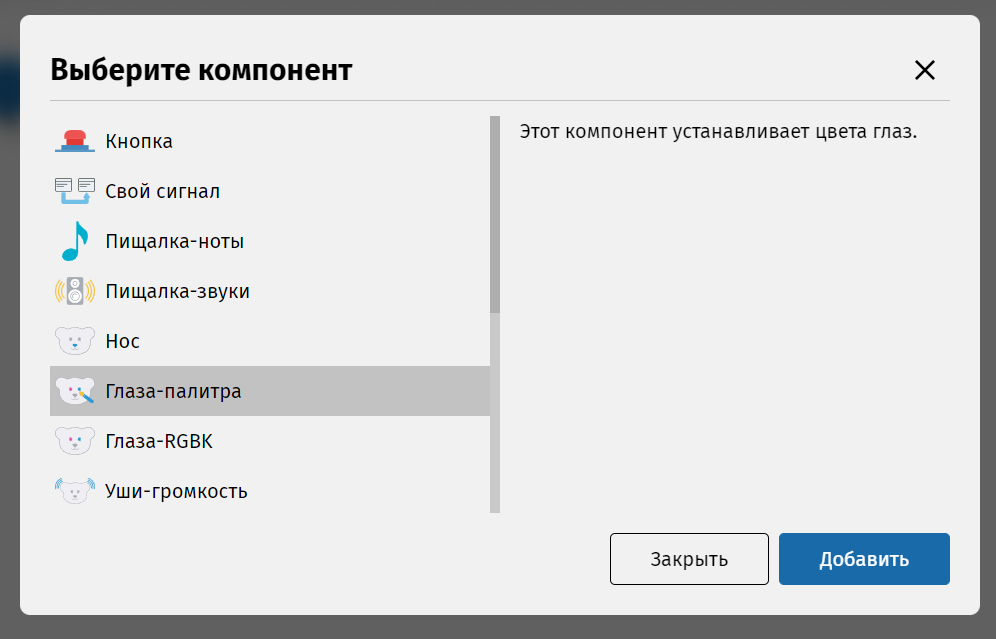
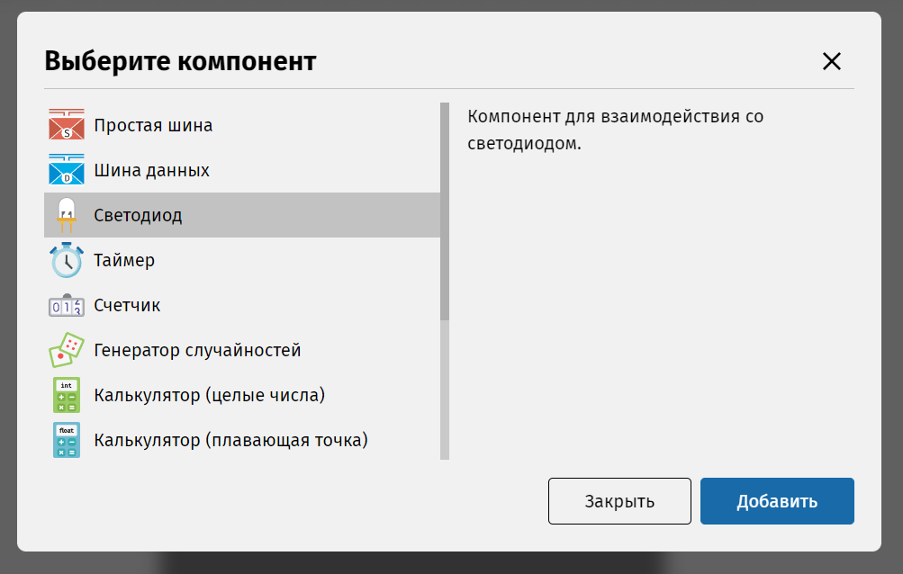
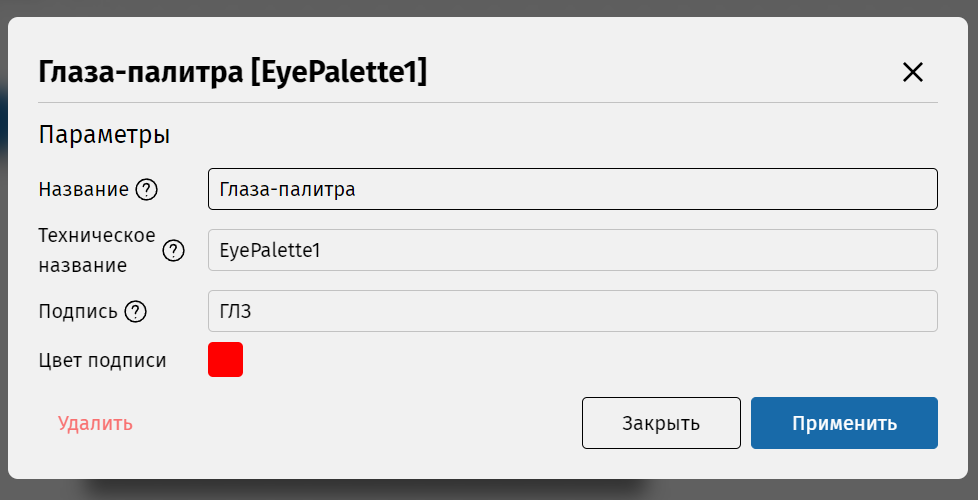
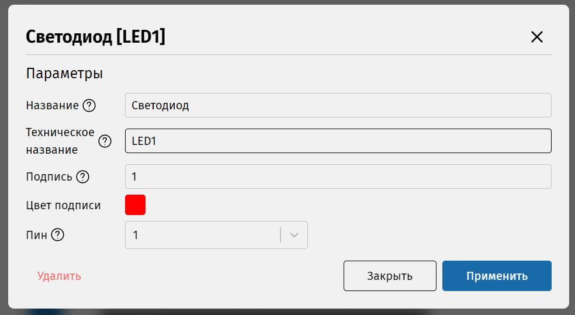

Для того, чтобы машина состояний чем-то управляла, нужно обозначить, с чем она будет работать. А именно, добавить компоненты. Можно привести аналогию: схема – это сценарий пьесы, а компоненты – это актёры, которые отыгрывают в пьесе свои роли. Без актёров нет выступления.
Добавим компонент. На боковой панели выберите раздел «Диаграмма»
 , далее в
открывшейся вкладке нажмите на значок в виде плюса
, далее в
открывшейся вкладке нажмите на значок в виде плюса
 , который
находится напротив заголовка «Компоненты».
, который
находится напротив заголовка «Компоненты».
Появится окно выбора компонента. Рассмотрите список компонентов и прочтите их описания.
Мы будем управлять цветом глаз, поэтому нам нам пригодится компонент Глаза-палитра. Выберите его и нажмите «Добавить».
Мы будем управлять светодиодом, поэтому нам точно понадобится компонент Светодиод. Выберите его и нажмите «Добавить».
После добавления компонента появится его окно настройки. Здесь можно указать его название (которое будет отображаться в интерфейсе IDE), техническое название (как имя переменной в программе), указать подпись, содержащую до трёх символов (букв и цифр) и выбрать её цвет. Подпись нужна для того, чтобы отличать компонент на холсте.
Мы будем управлять цветом глаз КиберМишки, поэтому нам нам пригодится компонент Глаза-палитра. Выберите его и нажмите «Добавить».
Для светодиода доступен параметр «Пин». Чтобы узнать, зачем он нужен, можно навести курсор на знак вопроса рядом с названием параметра. Выберите пин на своё усмотрение и нажмите «Применить».
Компонент появится в списке в боковой панели, и теперь его можно использовать на схеме. Но кроме него нам нужен компонент, который позволил бы отсчитывать время. Добавьте его на схему таким же образом. Это компонент Таймер.